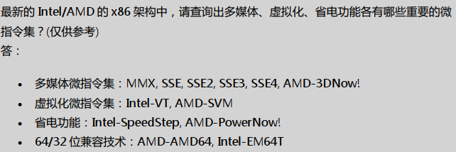

鸟哥的私房菜
计算机概论
计算机组成单元
计算机组成：输入单元、处理单元（CPU内部控制单元+算术逻辑单元）、输出单元、存储单元（外部存储器+CPU内部的主存储器）。
数据都是流经CPU内部的主存储器在转出去的，至于数据会流进/流出内存则是CPU发出的控制命令实现，实际处理的数据完全来自主存储器CPU种类
精简指令集(Reduced Instruction Set Computing, RISC)
完成动作单一，执行时间短
常见的RISC 微指令集 CPU 例如Sun公司的 SPARC 系列、 IBM 公司的Power Architecture(包括 PowerPC)系列、不 ARM 系 列等
复杂指令集(Complex Instruction Set Computer, CISC)
每个指令集成了一些较低阶的硬件操作，指令数目多且杂，执行时间较长，处理的工作较为丰富。
Intel/AMD 的x86 架构CPU
指令集：软件都经过CPU内部转换成微指令来执行接口设备
最重要的接口设备–主板（负责将所有设备通通连一起）
主板最重要的组件–主板芯片组（将所有设备汇集一起）
芯片组分两个网桥与各组件交互
- 北桥：负责速度快的组件，CPU、主存储器、显示适配器等组件
- 南桥：负责连接速度较慢的组件，硬盘、USB、网卡等
次要设备–存储设备、显示设备、网络设备（网卡）
容量单位
进制位 K M G T P 二进制 1024 1024K 1024M 1024G 1024T 十进制 1000 1000K 1000M 1000G 1000T 速度单位
CPU指令周期常用单位MHz或GHz，Hz其实是秒分之一。
CPU主频为3Ghz表示1秒能进行3x10^9次工作（一次工作运行少数的指令），若外频为333Mhz，则倍频为9倍。3G = 333M x 9
外频（通常超频是指拉高外频）
是指CPU与外部组件进行数据传输时的速度
倍频（通常被厂家锁定，无法修改）
是指CPU内部用来加速工作效能的一个倍数
主频 = 外频 x 倍频
网络使用单位为Mbps（Mbit per second）
8M ADSL –> 1Mbyte/s
1M ADSL –> 125Kbyte/s
带宽
北桥支持的频率称为前端总线速度（Front Side Bus，FSB）（通常为内存频率1066/1333/1600Mhz），每次传送数据的位数为总线宽度。常见的总线宽度为32bit/64bit。
举例：内存与北桥的带宽为12.8GBytes/s
即1600Mhz x 64bits = 1600Mhz x 8Bytes = 12800MBytes/s = 12.8GBytes/s
内存
主存储器（内存）主要组件为动态随机存取内存（dynamic random access memory，DRAM）
需在通电状态使用，断电数据丢失，也称为这种RAM为挥发行内存DRAM 技术更新分好几代（由旧到新）
SDRAM
DDR SDRAM（DDR、DDRⅡ、DDRⅢ、DDR4）
DDR 是指双倍数据传送（Double Data Rate，一个工作周期进行两次数据传送，类似CPU倍频）

双通道设计
拓展传统总线的宽度，将两个内存汇总在一起以达到128bit，就是双通道的设计理念。
DRAM与SRAM(Static Random Access Memory,SRAM)

L2 cache就是静态随机存储内存，SRAM在设计上使用晶体管数量较多，价格高不易做成大容量，但其速度快，因此整合到CPU成为高速缓存。
只读存储器ROM
BIOS（basic input output system）是系统开机首先会去读取的小程序，控制着开机时各项硬件参数，CMOS将记录这些参数到ROM中，这些参数包括系统时间、CPU电压与频率、各项设备的IO地址、IRQ中断信道等。
记录需要用电，所以主板上还有个小电池专门用来供电，断电数据不会丢失
闪存flash和EEPROM
现在BIOS也需要更新，而ROM又是无法修改的，所以现在BIOS通常写入闪存flash和EEPROM中。
固态硬盘SSD（solid state disk）
厂商用闪存做的，数据延迟低、省电、寿命较机械硬盘短。
显卡插槽


操作系统
简单理解为核心和相关的用户应用软件。只管理整个硬件资源（CPU、内存、输入输出装置及文件系统文件。）
如果没有用户软件的辅助，操作系统只能让计算机Ready而已
驱动程序
驱动硬件在操作系统上正常运行。驱动程序由厂商提供，与操作系统开发者无关。
应用程序
依托操作系统提供的开发接口所开发出来的软件。
CH1 Linux是什么
Linux的历史
Linus Torvalds开发Linux核心
POSIX（Portable Operating System Interface）可携式操作系统接口
树莓派/香蕉派/智能型手机/平板的ARM架构系统大多也使用Linux核心
Linux是架站首选（具备计算机基础和网络基础相关知识）
网络服务问题，到/var/log/目录中查询log file文件解决
转载请注明来源，欢迎对文章中的引用来源进行考证，欢迎指出任何有错误或不够清晰的表达。可以在下面评论区评论，也可以邮件至 q_tnt@qq.com